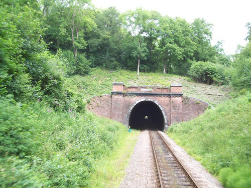
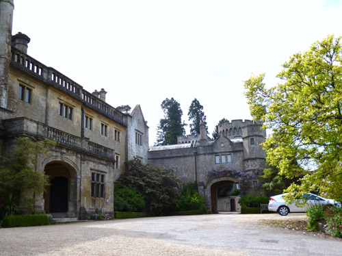
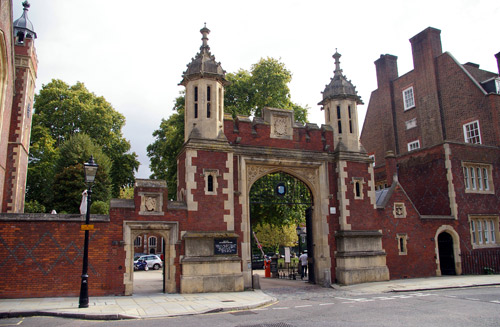
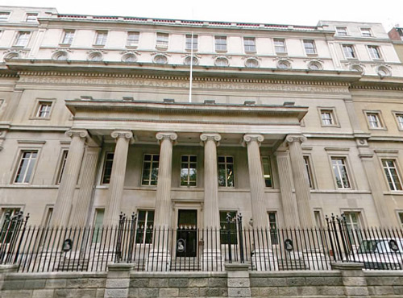

Sharpthorne Tunnel on the Bluebell Railway in Sussex through which Poirot and Gilbert Entwhistle travel to 'Enderby'. (The Bluebell Line is also used in 'Mrs McGinty's Dead').

Rotherfield Park in Hampshire used as 'Enderby'.

The drive and entrance to 'Enderby'.

The clipped hedges in the garden at 'Enderby' where Poirot walks with Helen Abernethie.

Normansfield Theatre in Teddington used as the venue where Susannah Henderson fund-raises for Africa. (Also used in 'The Tragedy at Marsdon Manor' and 'The Case of the Missing Will').

The New Wimbledon Theatre used as the theatre where Michael and Rosamund Shane are performing.

Lincoln's Inn used as the venue for 'Timothy Abernethie's house' and 'the Convent'.

Entrance Gate to Lincoln's Inn seen in the background.

The Royal College of Surgeons in Lincoln's Inn used as the 'London Academy of Arts' where Giovanni Gallaccio authenticates the Rembrandt. (Also used in 'The Mystery of the Spanish Chest').